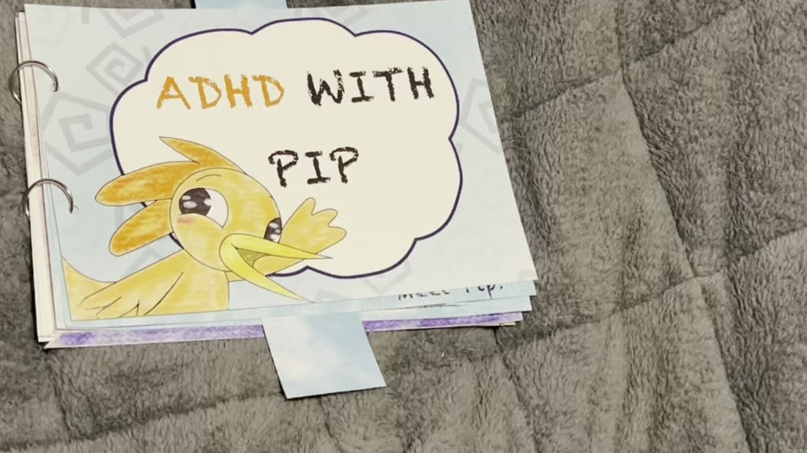
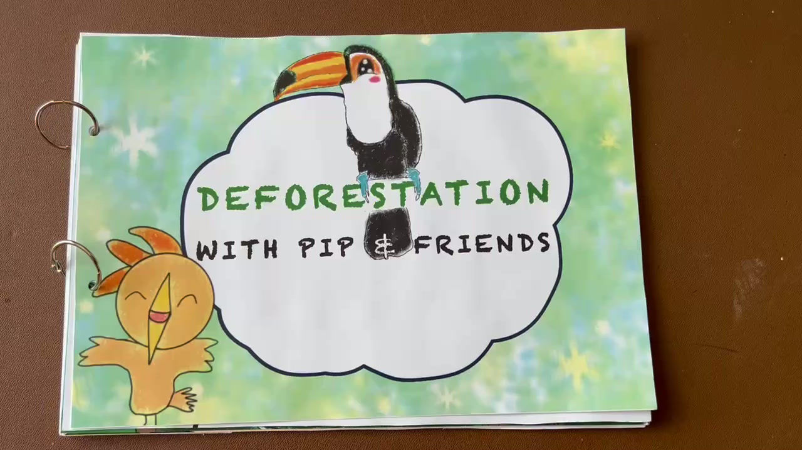
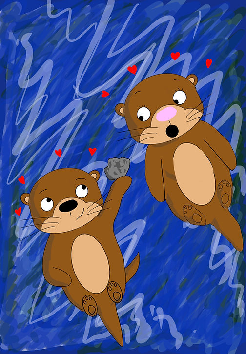
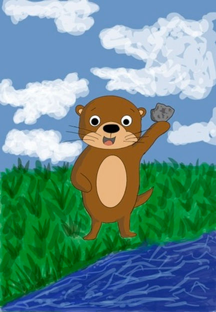
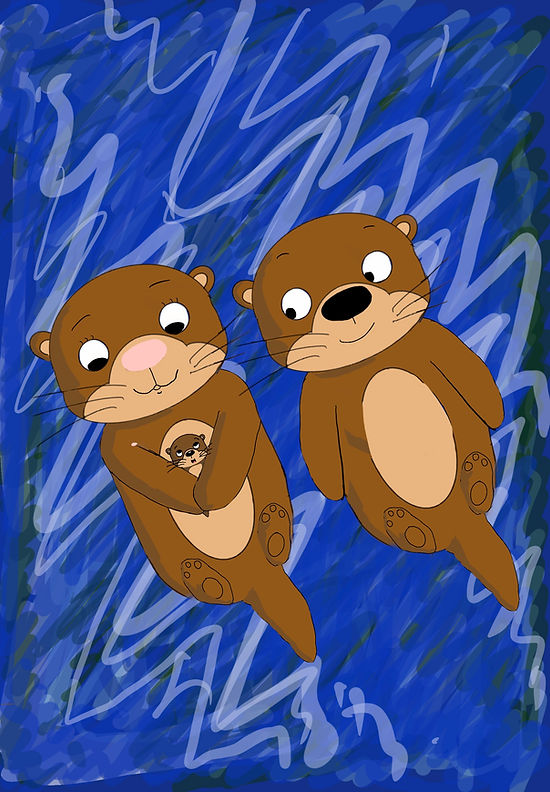
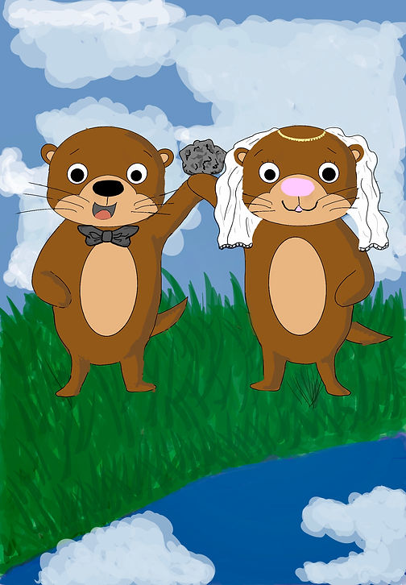

Pip beginsCharacter introduction
 Bethany Jayne
Bethany JayneChildren's books
Story-led illustration for books, campaigns and educational projects that help young readers connect with big ideas.
Pip and friends
A handmade storybook project about deforestation, ADHD and finding your place in the world. The visual language is bright, tactile and full of friendly faces.






For publishers and creators
Whether you need a cover concept, campaign artwork or a complete character world, I bring the same care to the story strategy as I do to the colour and line.
Discuss a project